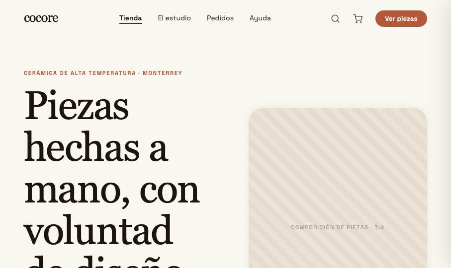
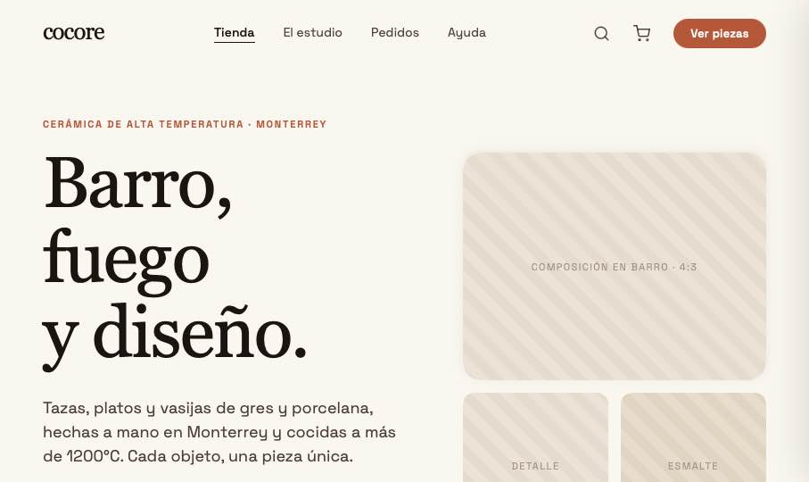
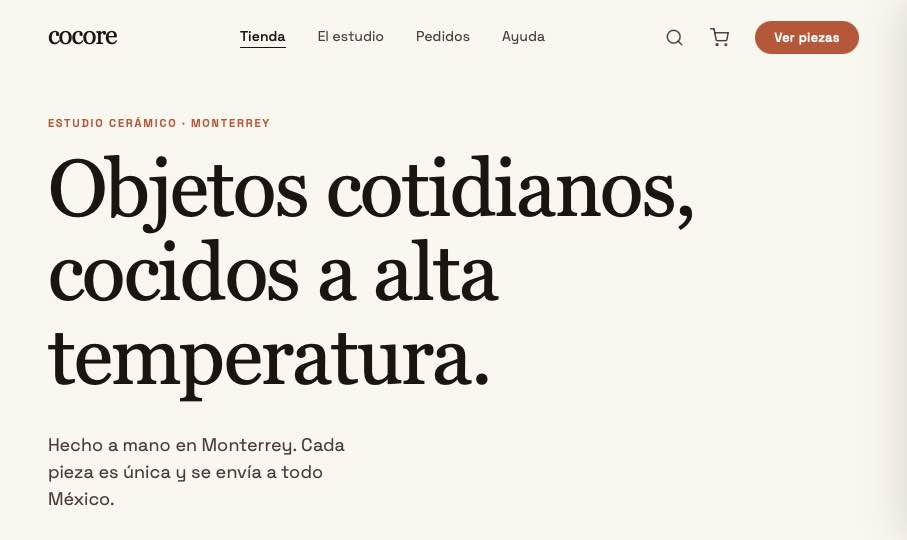

Mismo sistema visual de Cocore, tres maneras de abrir la tienda. Comparten Nav, catálogo y carrito — cambian el layout, el uso del color y el ritmo. Abre cualquiera para navegarla completa; todas enlazan al mismo ecommerce.
Fiel al sistema: ritmo de superficies canvas → hueso → barro → terracota y terracota racionada. Ahora incluye la Colección Humo como banda oscura destacada. La dirección recomendada.

Hero claro y editorial; el fondo oscuro se reserva para la banda destacada (Colección Humo). Misma presencia, mejor integrado al resto del diseño.

Tipográfica y directa: el grid de producto aparece de inmediato con pestañas por categoría. Mucho aire, casi sin terracota.
